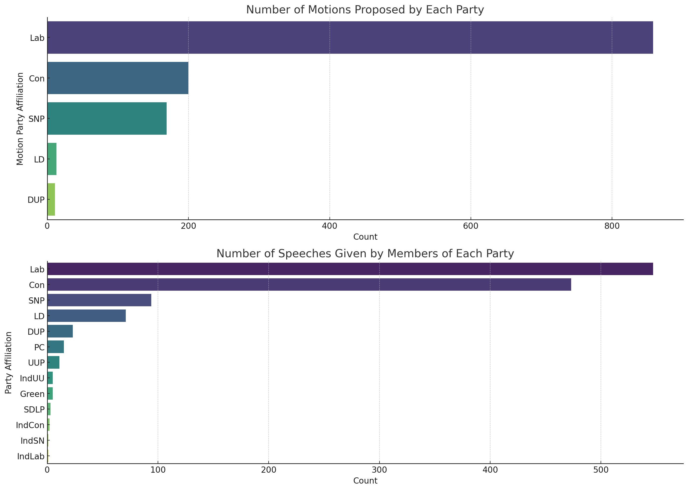
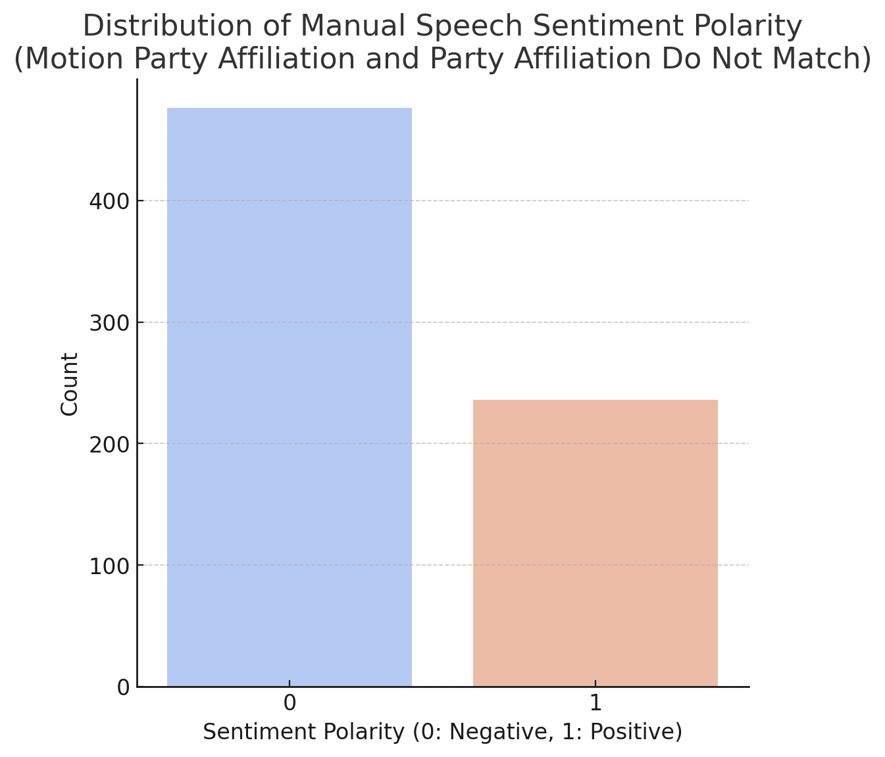
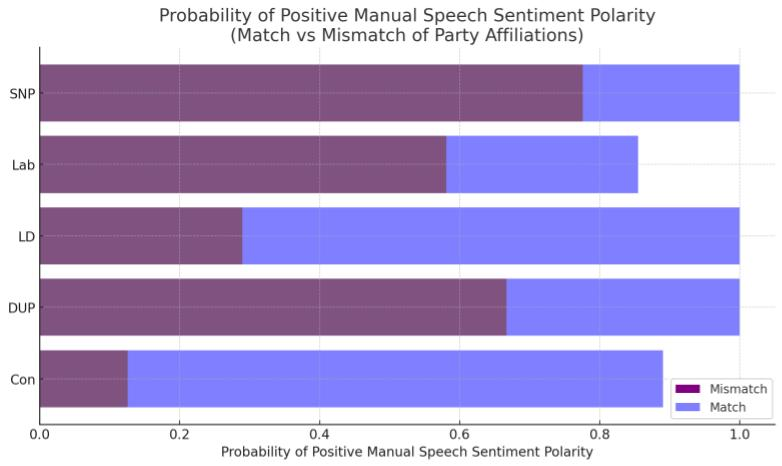

Aenean ornare velit lacus, ac varius enim lorem ullamcorper dolore aliquam.
Everyone's heard of Hansard for their meticulous recording of Parliamentary debates. This recently produced dataset offers an unprecedented insight not just into the dialogues but also the underlying emotions of the speakers, allowing for a nuanced analysis of Parliamentary proceedings.
Hard Disclaimer: This whole article, including text and charts, was generated with ChatGPT. That means you can't trust it, even if it tells a story that lines up with your sentiment...
The Manual Speech Sentiment Polarity embedded in HanDeSeT serves as a barometer measuring the sentiment behind every speech, allowing us to discern whether the discussions were predominantly positive or negative. It reveals the multifaceted aspects of the debates, from the topics introduced to the emotions intertwined with the discourses. This granular approach facilitates an enhanced understanding of the diverse perspectives represented within the Parliament. It shows us what topics were brought up, who talked about them, and how they felt about them. The Manual Speech Sentiment Polarity helps us understand whether the person speaking had a positive or negative view about the topic being discussed.
Playing around with the data, we can see that even though Conservatives proposed fewer topics (less than 25% of the motions), they talked nearly as much as the Labour party ministers did. This makes sense given that the Conservatives are the main opposition party to Blair and Brown's governments through most of the period this data is taken from.
When we talk about voting, we’re also looking at the way ministers speak about the motions they are voting on. The dataset also gives us instances of party and motion proposer incongruity. This lets us understand ministerial perceptions of inter-party proposals. This is interesting because it helps us understand how ministers feel about ideas coming from other parties.
This chart visualizes these instances and shows us the distribution of positive and negative sentiments when the motion party affiliation and the speaker's party affiliation do not match. This chart is super important as it gives us a closer look at how often ministers from different parties speak positively or negatively about motions they didn’t propose.
So, what does this chart tell us in simpler terms?
Now, here’s where things get spicy. The Conservatives, who talk a lot, rarely say positive things about topics they didn’t bring up.
This might be because of the strong control within the party. But Labour ministers are different – they sometimes speak against their party and, like the DUP and SNP, are more likely to speak positively about a topic their party didn’t propose. However Labour ministers are unique in that they sometimes openly disagree even with their own party. This shows a level of independence and a willingness to prioritize personal beliefs or the needs of their constituents over party loyalty.
This deeper look at the chart and the dataset helps us understand that voting against party lines is not just about rebellion; it’s about diverse thinking and being open to ideas, no matter their origin. It’s about ministers genuinely considering the motions and deciding what they believe is the right thing to support, rather than just following the party line.
Aenean ornare velit lacus, ac varius enim lorem ullamcorper dolore aliquam.

Aenean ornare velit lacus, ac varius enim lorem ullamcorper dolore aliquam.

Aenean ornare velit lacus, ac varius enim lorem ullamcorper dolore aliquam.
Sed varius enim lorem ullamcorper dolore aliquam aenean ornare velit lacus, ac varius enim lorem ullamcorper dolore. Proin sed aliquam facilisis ante interdum. Sed nulla amet lorem feugiat tempus aliquam.